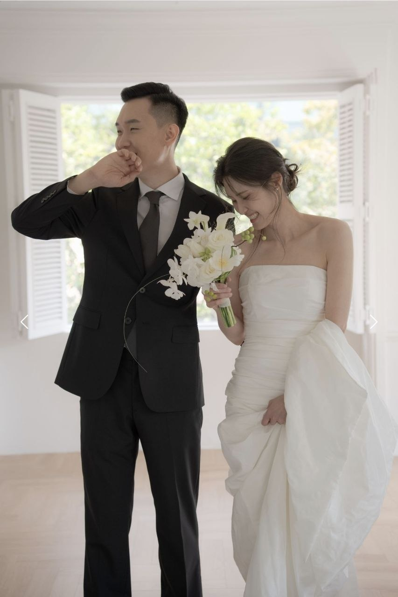
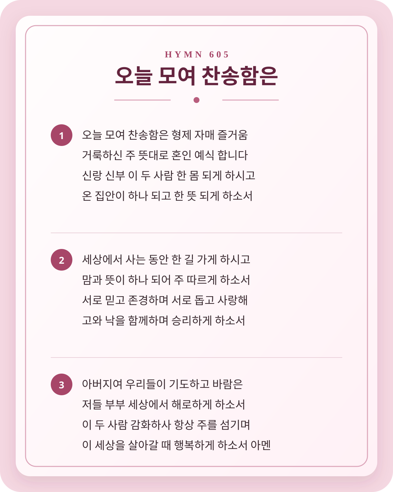

Wedding Ceremony
박요한·김세나
2026년 10월 9일(금) 오후 4시 30분
주례: 목사 이광복(라온동행교회)
신랑 박요한
부 박상민 · 모 정미경
신부 김세나
부 김수철 · 모 이순남
결혼예식 순서
- 예식으로의 초대
-
찬송 찬송가 605장(오늘 모여 찬송함은)

찬송가 605장 · 오늘 모여 찬송함은 - 대표기도목사 차준혁(바이탈교회)
-
성경봉독에베소서 5장 21-28절
에베소서 5:21-28
개역개정
21그리스도를 경외함으로 피차 복종하라
22아내들이여 자기 남편에게 복종하기를 주께 하듯 하라
23이는 남편이 아내의 머리 됨이 그리스도께서 교회의 머리 됨과 같음이니 그가 바로 몸의 구주시니라
24그러므로 교회가 그리스도에게 하듯 아내들도 범사에 자기 남편에게 복종할지니라
25남편들아 아내 사랑하기를 그리스도께서 교회를 사랑하시고 그 교회를 위하여 자신을 주심 같이 하라
26이는 곧 물로 씻어 말씀으로 깨끗하게 하사 거룩하게 하시고
27자기 앞에 영광스러운 교회로 세우사 티나 주름 잡힌 것이나 이런 것들이 없이 거룩하고 흠이 없게 하려 하심이라
28이와 같이 남편들도 자기 아내 사랑하기를 자기 자신과 같이 할지니 자기 아내를 사랑하는 자는 자기를 사랑하는 것이라
- 설교둘이 하나되어주례자
- 혼인서약신랑/신부
- 성혼선포주례자
- 부부의기도신랑/신부
- 축가김새롬
- 축도주례자
- 가족 인사신랑신부 및 양가부모
-
광고
- 예식 후 가족 사진 촬영이 있을 예정입니다.
하객 여러분께서는 식사 장소로 이동해 주시기 바랍니다. - 식사 장소는 드마리스 부천점, 베네홀입니다.
주소: 경기도 부천시 길주로 71, 3층 (교회에서 약 30분 소요) - 차량이 없으신 하객분들께서는
안내에 따라 모여 주시면 감사하겠습니다. - 귀한 걸음 해주신 분들을 위해 식사 장소에서
특별한 경품 추첨이 준비되어 있사오니,
빠짐없이 참석하셔서 즐거운 시간 보내시길 바랍니다.
- 예식 후 가족 사진 촬영이 있을 예정입니다.